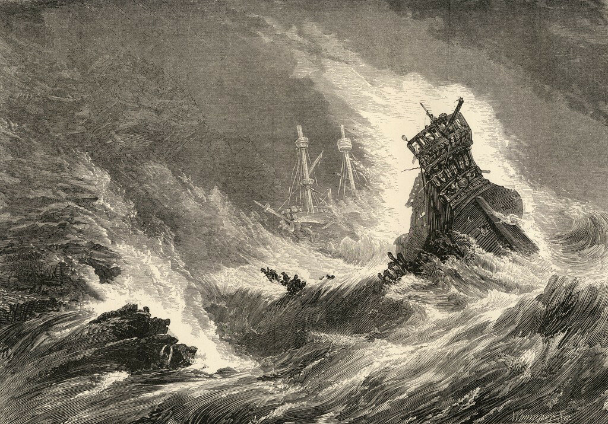
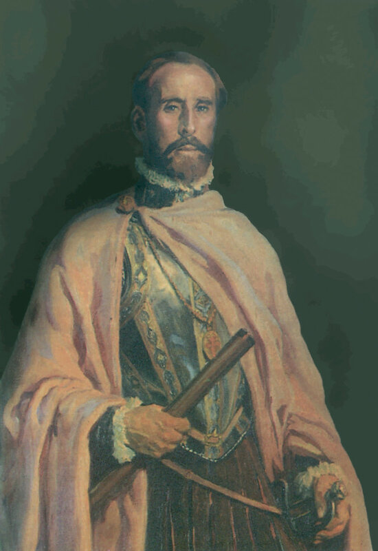
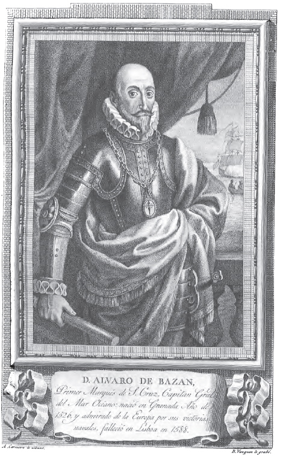

Медина-Сидония и Рекальде: когда в товарищах согласья нет…
Послушать тебя все едино, что наших керженских келейниц: все бес творит, а мы, вишь, святые, блаженные, завсегда ни при чем. Везде один он, окаянный, во всем виноват... Бедненький!..
П.И. Мельников-Печерский. В лесах
Не корите меня: я не покинул тему фелук, начатую в прошлых постах, а лишь решил бросить более широкий взгляд на обстановку, в которой фелуки под именем falúa впервые появились в строю боевых кораблей. Произошло это в походе Непобедимой армады на Англию в 1588 году. Фелуки входили в состав эскадры малых кораблей под командованием дона Антонио Уртадо де Мендосы, которого после смерти сменил Августин де Охеда.
Как известно, в эту эскадру, наряду с черырьмя относительно крупными кораблями (водоизмещением более 100 тонн), входили 34 судна меньшего размера: 10 каравелл, 10 паташей (pataches), семь фелук (falúas) и семь сабр (zabras).
Из сохранившихся свидетельств о походе Непобедимой армады и особенно из некоторых документов, лишь недавно введенных в обращение, нам известно, что командовавший походом герцог Медина-Сидония лишь изредка собирал своих подчиненных командиров для инструктажа и обсуждения сложившейся вокруг Армады обстановки. Обычно же распоряжения командующего на корабли Армады доводились специальными письменными указаниями (billetes), которые доставлялись адресату на фелуках (falúas) или паташах (pataches).
Описаний экспедиции Непобедимой Армады множество, в том числе и на русском языке.

Крушение корабля Непобедимой армады во время шторма. Иллюстрация из ‘Spanish Pictures’ (Samuel Manning, 1870). Частная коллекция
Поэтому избавим читателя от повторения прописанных до нас истин, а используем мало известный документ из военно-морского архива Испании, который опубликован в №60 испанского журнала Revista de historia naval за 1998 год. Документ этот – дневник «солдата» (Relaçión hecha por un soldado en la Almiranta San Juan), лично участвовавшего в походе на борту галеона San Juan de Portugal, флагманского корабля эскадры «Бискайя» (командующий – Хуан Мартинес де Рекальде). Конечно же, ни солдат, ни матрос не мог составить такой документ во время похода (известные образцы подобного творчества обычно создавались многие годы спустя после описываемых событий, яркими примерами могут служить «Цусима» А.С. Новикова-Прибоя и «На «Орле» в Цусиме» В.П. Костенко, хотя в последнем случае автором был не матрос, а корабельный инженер). Историки подтверждают, что в нашем случае дневник был составлен во время самого похода и, возможно, лишь слегка отредактирован сразу после возвращения кораблей Армады в Ла-Корунью. Наличие в дневнике очень точных наблюдений и суждений свидетельствует о весьма глубоких познаниях его автора в военно-морском деле. Скорее всего, текст «Дневника» был надиктован лично командующим де Рекальде во время двухмесячного похода и отредактирован в период краткого его пребывания в Ла-Корунье перед тем, как документ вместе с рядом других бумаг на эту же тему был отправлен в Мадрид дону Мартину де Идиакесу (Don Martín de Idiáquez), помощнику секретаря Государственного совета Испании по иностанным делам, и через него – непосредственно королю.

Портрет Хуана Мартинеса де Рекальде. Автор неизвестен.
Рекальде, направляя подборку документов руководству страны, преследовал три цели. Во-первых, делал он это для «очистки совести» («descargo de su consciencia»). Его желание рассказать королю о том, почему всё пошло не так в английском походе позволило бы, как он считал, избежать таких же ошибок в будущем. Во-вторых, он стремился защитить свою репутацию от нападок тех, кто попытается возложить на него вину за провал кампании. Он знал, что Медина-Сидония вел свой «Дневник кампании», а также то, что и другие руководители похода составили свои отчеты об экспедиции; однако у Рекальде не было уверенности, что в этих документах не будет искажена его роль в сражениях. И в-третьих, Рекальде намеревался лично указать на тех флотоводцев, которые несли ответственность за провал Армады: герцога Медина-Сидония и его основного советника по военно-морским делам Диего Флореса де Вальдеса (Diego Flores de Valdés).
Однако Рекальде не мог быть беспристрастным судьей в разборе причин поражения Непобедимой армады. Бесспорно, он был очень опытным военным моряком. Почти за два года до экспедиции, когда Филипп II обсуждал вопрос о формировании флота для похода на Англию с маркизом де Санта-Крус (Альваро де Басан, мы несколько раз писали о нем ранее), предшественником Медина-Сидония на посту главнокомандующего, король рекомендовал своему собеседнику проконсультироваться по вопросам экспедиции с Рекальде, а также Мигелем де Окендо (Miguel de Oquendo) и другими опытными моряками (y otros que aura platicos en la armada de las costas y puertos).

Альваро де Басан, маркиз Санта-Крус («Retratos de Españoles ilustres» 1791)
Маркиз сделать этого не успел. После его смерти Рекальде написал королю письмо, в котором предложил свою кандидатуру на место усопшего командующего (см. La Armada invencible (1587-1589) , recopilador Enrique Herrera Oria, Madrid - Archivo Histórico Español, 1929, письмо от 16.02.1588 г.) Назначение главой экспедиции герцога Медина-Сидония было, без сомнения, ударом по самолюбию старого моряка. И этот удар едва ли был смягчен предложенной ему должностью адмирала – заместителя главнокомандующего Армадой (Almirante General).
Рекальде был потомственным моряком, он родился в Бильбао, в семье профессиональных мореходов, занятых торговыми и почтовыми морскими перевозками между Испанией и Нидерландами. Запись о нем в документах впервые появляется в 1547 году, он фигурирует как помощник своего отца, носившего то же имя. В 60-х годах Рекальде уже является наблюдателем (proveedor) над строительством новых кораблей для королевского флота в Бискайе, а в 1572 году командует флотилией, которая сопровождает нового генерал-губернатора в Нидерланды с отрядом из 1200 бойцов, предназначенных для войны во Фландрии. Рекальде остается с ними на 2 года, безуспешно пытаясь отбить Миддельбург. В 1575 году, после краткого пребывания в Испании, он возглавляет флот из 48 кораблей, направленный с целью высадки вооруженного отряда в Дюнкерке. Король возложил на Рекальде также задачу вывода на родину испанских войск после их поражения в Нидерландах, а также руководство экспедицией в юго-западную Ирландию. Этот краткий перечень приведен здесь для того, чтобы показать, что Рекальде был хорошо знаком с районом боевых действий, предназначенных для операций Непобедимой армады. Кроме того, он приобрел опыт боевых действий на Азорских островах и был знаком с возможностями кораблей Армады, являясь заместителем маркиза де Санта-Крус вплоть до его смерти. Таким образом, вряд ли в то время в испанском флоте был другой адмирал, более знакомый с условиями боевых действий флота в Северной Атлантике и способный управлять объединением разнородных кораблей.
Несмотря на обиду, Рекальде воспринял назначение Медина-Сидония внешне спокойно, чего нельзя сказать о его реакции на назначение Диего Флореса де Вальдеса (Diego Flores de Valdés, 1530-1595) , ранее назначенным командующим эскадры «Кастилия», главным советником герцога по морским делам (para lo de la marinería).
Рекальде не мог обвинить де Вальдеса в недостатке морского опыта: Диего Флорес находился на морской службе испанской короны с 1550 года и входил в состав экипажа корабля, на котором будущий король Испании Филипп II направился за своей невестой Марией Тюдор в Англию. Его участие в кампании по разрушению в 1565 году протестантских поселений во Флориде также не осталось незамеченным. Кроме того, несомненной заслугой де Вальдеса являлась благополучная проводка восьми конвоев с сокровищами между Карибами и Испанией в период между 1567 и 1580 гг. Учитывая, что Филипп II первоначально рассматривал миссию Армады всего лишь как конвой для доставки сухопутных войск с необходимым вооружением и припасами, присутствие такого моряка как де Вальдес на руководящей должности флота выглядело вполне естественным. Однако после назначения де Вальдеса на должность командующего одной из эскадр Армады в начале 1588 года один из советников короля рекомендовал ему назначить на эту должность человека «менее склонного к фатовству и рисовке, более решительного и деятельного» («onbre de más brios y no tan tímido, y poco amigo de acudir a la ocasión») Именно эти отрицательные качества Диего Флореса де Вальдеса сыграли самую негативную роль во время кампании. И хотя Медина-Сидония следовал практически всем советам де Вальдеса, Рекальде и другой опытный моряк, дон Алонсо Мартинес де Лейва (Alonso Martínez de Leiva) упорно противостояли им.
О том, кто такой был Лейва и по каким конкретно вопросам столкнулись руководители Непобедимой Армады – узнаем в следующий раз.